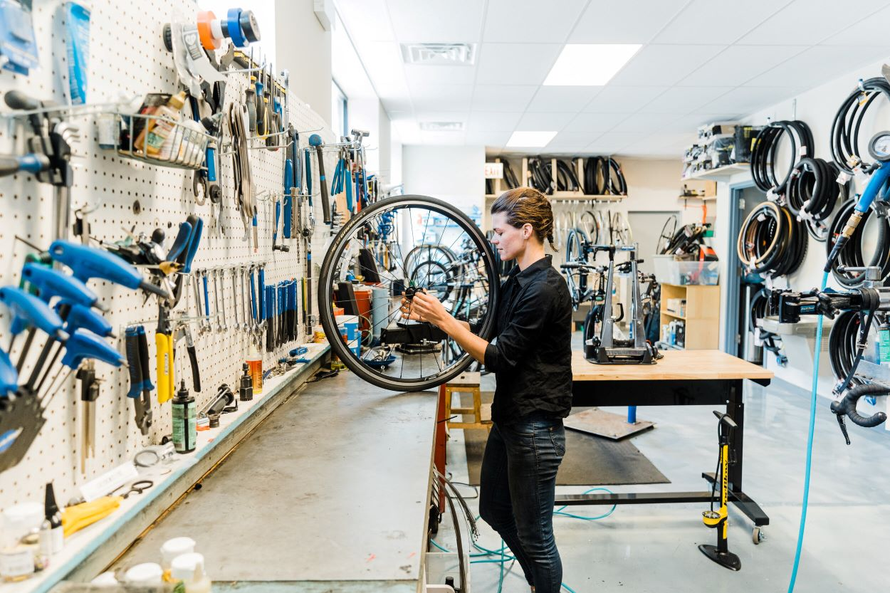

De toekomst van fietsservice
Elke wielrenner kent het moment: een lekke band net voor de finish, een ketting die eraf loopt op het slechtst mogelijke moment, of pure paniek midden in de koers. Of, zoals Remco het riep tijdens de Olympische Spelen: “Fietss! Fietss!” Bij Mijn.Service Koers zorgen wij ervoor dat je op dat soort momenten niet aan je lot wordt overgelaten. Met meer dan 42 partners en locaties en een team van ervaren mechaniekers die amateurwielrenners ondersteunen met dezelfde toewijding en vakmanschap als in het profpeloton. Van last-minute herstellingen en volledige racevoorbereiding tot het huren van een volgwagen of directe hulp tijdens de wedstrijd. Wij brengen rust waar chaos dreigt. Jij focust op je prestaties, wij zorgen dat je materiaal in topvorm is én blijft.
Hoe werkt het?
Je hoeft geen prof te zijn om met een professioneel team te rijden. Bij Mijn.Service Koers houden we het simpel. Je laat ons weten waar en wanneer je rijdt: een koers, een granfondo, of een meerdaagse ronden. Wij zorgen voor de rest: een ervaren mecanicien, een uitgeruste volgwagen als je die nodig hebt, en een fiets die perfect in orde staat. Voor, tijdens en na je wedstrijd staan we klaar met tools, onderdelen en kennis. Of je nu hulp nodig hebt aan de startlijn of iemand zoekt die “Fietss!” komt brengen midden in de koers — wij zijn er.
Wat kost dat?
Bij My Service Course geloven we in transparantie én kwaliteit.
Daarom bieden we verschillende
pakketten
aan, afgestemd op jouw noden en type evenement. Zo betaal je nooit voor wat je niet nodig hebt, maar ben je
wél zeker van professionele ondersteuning op het moment dat het telt.
Onze pakketten:
- Basic-pakket
- Koers-pakket
- Pro-pakket
meerdaagse evenementen of internationale ritten maken we graag een offerte op maat. U vindt meer informatie over ons aanbod en kosten hier.
Geen verrassingen, wel zekerheid. Heb je speciale wensen of rijd je met een team? Laat het ons weten, dan bekijken we samen hoe we jou het beste kunnen ondersteunen.